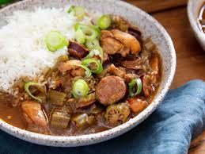

Classic Creole Gumbo
↓ Jump to Recipe
Servings:
6
⬇ Download PDF

"The crown jewel of Louisiana cuisine. A deeply complex, rich stew built on a dark mahogany roux, packed with the Holy Trinity, spicy Andouille sausage, tender chicken, and plump shrimp."
Ingredients
The Roux
- ½ cup vegetable oil or lard
- ½ cup all-purpose flour
Proteins
- 1 lb Andouille sausage, sliced into ½-inch rounds
- 1 lb boneless chicken thighs, cut into bite-sized pieces
- 1 lb medium shrimp, peeled and deveined
Holy Trinity & Aromatics
- 1 large yellow onion, diced
- 1 green bell pepper, diced
- 3 ribs celery, diced
- 4 cloves garlic, minced
- 2 cups fresh okra, sliced (or frozen)
Simmer & Seasonings
- 6 cups chicken or seafood stock
- 14 oz can crushed tomatoes
- 1 tbsp Cajun/Creole seasoning
- 2 dried bay leaves
- 1 tsp Worcestershire sauce
- Kosher salt and cayenne pepper to taste
- Filé powder (optional, for serving)
For Serving
- Cooked long-grain white rice
- Fresh scallions, thinly sliced
Instructions
- Sear the meats: In a large, heavy Dutch oven over medium-high heat, add 1 tbsp of oil. Brown the sliced Andouille until crisp and rendered (5–7 minutes). Remove with a slotted spoon. Season the chicken with a pinch of Creole seasoning, sear until browned on all sides, then remove and set aside with the sausage.
- Build the dark roux: Reduce heat to medium-low. Add the remaining oil and flour to the pot. Stir constantly and without stopping for 20–30 minutes until the roux transforms into a deep, dark mahogany color resembling melted dark chocolate. Do not let it burn.
- Soften the Trinity: Immediately add the diced onion, bell pepper, and celery into the hot roux — the vegetables will stop it cooking further. Stir well and cook 5–7 minutes until softened. Add garlic and okra, stirring for 2 more minutes.
- Build the stew: Slowly whisk in the stock a little at a time to prevent clumping. Add the crushed tomatoes, Worcestershire sauce, bay leaves, and Creole seasoning. Return the sausage and chicken (with any collected juices) to the pot. Bring to a boil, then reduce heat to low.
- Low and slow simmer: Simmer uncovered for 1 to 1½ hours, stirring occasionally. The okra and roux will naturally thicken the gumbo. Skim any excess oil from the surface. Taste and adjust salt and cayenne as desired.
- Finish with seafood: Drop the shrimp into the gumbo during the final 5 minutes of cooking. Simmer just until they turn pink and opaque. Turn off the heat and discard the bay leaves.
- Plate and garnish: Spoon a mound of warm white rice into the center of a wide bowl. Ladle gumbo heavily around the rice. Garnish with sliced scallions and a pinch of filé powder if desired.
The Sacred Roux Rule
- Patience wins: Keep heat controlled and your spoon moving constantly. If you see black flecks or smell a sharp burnt odor, your roux has scorched — discard it and start over. A burnt roux will taint the entire pot.